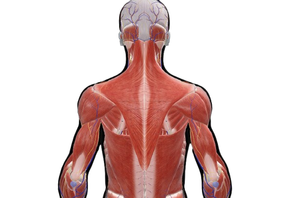
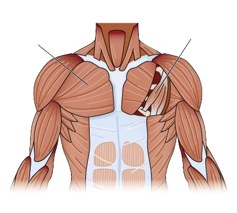
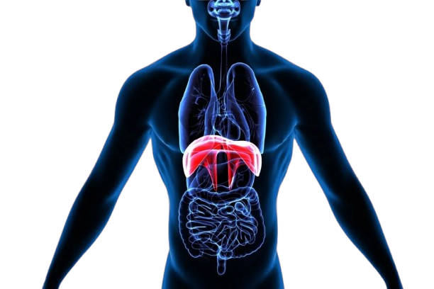
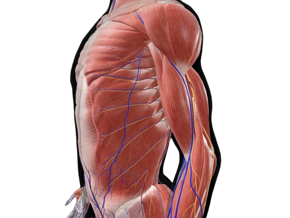

Mușchii trunchiului se grupează în:
- mușchii spatelui și ai cefei;
-mușchii anterolaterali ai toracelui;
- mușchii anterolaterali ai abdomenului.
În plan superficial, superior, se află mușchii trapezi. Inferior de mușchii trapezi se află marii dorsali.
În partea anterioară a toracelui se găsesc cei doi mușchi pectorali — marele și micul pectoral.
marele
micul
La baza cutiei toracice se află diafragma, un mușchi lat, care separă cutia toracică de cavitatea abdominală, având o față boltită spre torace și o față concavă spre abdomen.
Mușchii anterolaterali ai abdomenului. Sunt mușchi lați. De o parte și de alta a liniei mediane se află mușchii drepți abdominali.
Anterior față de fiecare mușchi drept abdominal se află mușchiul piramidal. Lateral de mușchii drepți abdominali se află mușchii oblic extern, oblic intern și transvers al abdomenului.